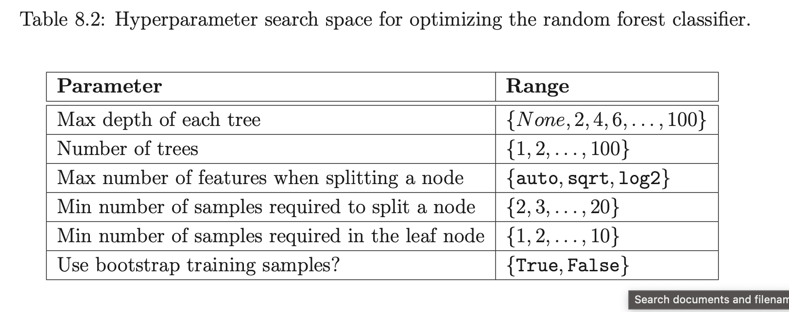

Literature Review
Last edited: June 8th, 2024
What can we find out about fatigue prediction based on EMG measurements?
Papakostas, 2019
Michalis Papakostas, Varun Kanal, Maher Abujelala, Konstantinos Tsiakas, and Fillia Makedon. 2019. Physical fatigue detection through EMG wearables and subjective user reports: a machine learning approach towards adaptive rehabilitation. In Proceedings of the 12th ACM International Conference on PErvasive Technologies Related to Assistive Environments (PETRA '19). Association for Computing Machinery, New York, NY, USA, 475–481. https://doi.org/10.1145/3316782.3322772
Task
Predict subjective fatigue (binary) ocurrence during exercise performance using EMG data.
Protocol
- perform exercise (3 exercises; shoulder flexion (SF), shoulder abduction (SA) and elbow extension (EE)) using Barret WAM arm (give feedback force)
- push against resistor as long as possible
- when feeling fatigued -> tell experimenter (who marks the time point)
- hold for 10 more seconds
- go back to starting position
3 repetitions of each exercise with short breaks in between
Sample
10 users × 3 exercises × 3 repetitions = 90 EMG recordings. Sampling frequency: 1926HZ
Pre- Processing
- Median filtering technique with a window size of 11 samples
- Extract short-term features (see below)
- Calculate mid-term features (see below)
Features
- Short-term features based on non-overlapping windows with a length of 0.25 seconds
- Minimum
- Maximum
- Standard Deviation
- Mean
- Spectral Minimum
- Spectral Maximum
- Spectral Standard Deviation
- Spectral Mean
- Spectral Entropy
- Spectral Flux
- Zero Crossing Rate
- Energy Entropy
- Wilson Amplitude (WAMP)
- for each of the above compute delta between the present set of features and the set of features extracted from the preceeding window
- Mid-term features based on overlapping windows with a length of 2 seconds and a window step of 1
- each set of 8 successive short-term feature vectors is described using the minimum, maximum, standard devation and mean information extracted from the short-term feature
Feature Selection
No inherent computational feature selection. The above features were selected based on past literature, additional features were also used during experimentation but not included in the final model due to bad performance.
Models
Linear SVM, SVM with an RBF Kernel, Gradient-Boosting (GB), Extra-Trees (ET) and Random Forests (RF)
Post Processing
Classifier makes predictions on a mid-term level -> need to be mapped to longt-term level (i.e. one predcition per sample)
- Median-filter of size K to the original predictions made by the classifier
- Gather the successive assigned labels into groups of M
- "If in the N past groups, the total number of samples that have been identified as ’FATIGUE’ exceeds a specific threshold, then and only then the method decides that the subject has shown signs of fatigue. Otherwise it assumes that the classification algorithm found a set of false positives and the process continues as if the subject has not been fatigued."
hyper-parameters were set to K1 = 3, M = 3,STEP = 1,N = 2,THRESH_VAL = 0.6 and K2 = 11
Results
-> results vary across tests, for single user evaluation Extra Trees are strongest (78%)
Kefalas, 2023
Kefalas, M. (2023, January 19). Data-driven predictive maintenance and time- series applications. Retrieved from https://hdl.handle.net/1887/3511983
Task
Build an automated time-series classification algorihtm to distinguish EMG time-series of healthy individuals and individuals either neuropathic or myopathic diseases by considering the two types of disease as one disease class
Protocol
Data has been collected during routine clinical care
- patients are asked to muscle at rest, during slight activation, and during (near-) maximal activation
- the last 40s are recorded
Sample
380 muscle recordings from 65 muscles (at rest or at maximum con- traction) based on 65 patients with IBM (n = 20), ALS (n = 20) and healthy (control group) (n = 25)
collected using concentric needle electrodes
data were recorded with two sampling rates, namely 4800Hz and 5000Hz comprising of 16642 and 14279 traces
For this study, the .
Pre-Processing
- longest artifact-free series of consecutive 0.2s segments from every muscle recording were selected rigorously by clinicians through visual inspection
- 5-second time-series were constructed by stitching together consecutive 0.2s segments of each unique ID (i.e. patient, muscle + side) -> at 4800Hz results in 24000 data points per examined muscle.
Features
Features are extracted based on the Python time series processing package 'tsfresh': https://tsfresh.readthedocs.io/en/latest/text/quick_start.html
Feature Selection
The feature selection algorithm "boruta" is used.
Model
Random forest model
Hyperparameters
Hyperparameter Optimization using Mixed-integer Parallel Efficient Global Optimization (MIP-EGO) for optimizing F1-macro score of a 10-fold cross-validation Executed 200 times
Results
Evaluation based on 10-fold Cross Validation